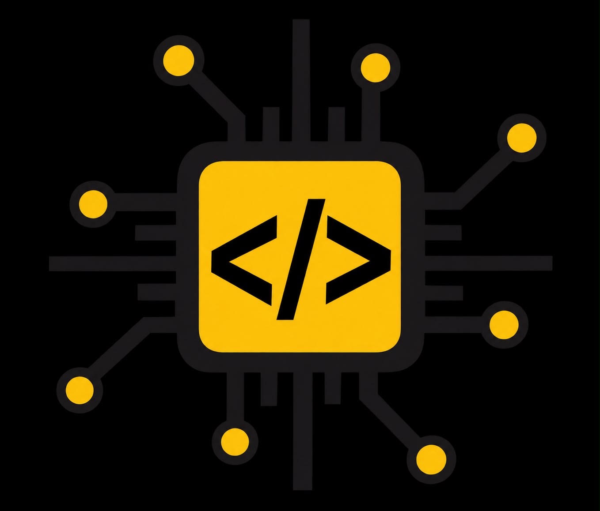

Programação
Transformamos problemas em lógica, algoritmos e código.
UMA JORNADA PELO MUNDO
DA TECNOLOGIA

CEEP DESENVOLVIMENTO DE SISTEMASConheça o Curso Técnico em Desenvolvimento de Sistemas: tecnologia, criatividade e projetos desenvolvidos pelos nossos estudantes.
const curso = {
nome: "Desenvolvimento de Sistemas",
local: "CEEP Laranjeiras",
foco: [
"Programação",
"Web",
"Banco de Dados"
],
projetos: true
};
console.log("Vamos criar?");|O Curso Técnico em Desenvolvimento de Sistemas prepara estudantes para compreender, criar e desenvolver soluções digitais.
Ao longo da formação, os alunos entram em contato com programação, desenvolvimento web, banco de dados, lógica e diferentes etapas de criação de sistemas.
Descubra o que aprendemos →Transformamos problemas em lógica, algoritmos e código.
Criamos interfaces e aplicações para a web.
Organizamos, armazenamos e trabalhamos com informações.
Colocamos o conhecimento em prática criando soluções reais.
Algumas das áreas e tecnologias que fazem parte da jornada dos estudantes.
Algoritmos, estruturas e resolução de problemas.
→Estrutura, estilo e interatividade para a web.
→Modelagem, consultas e organização de informações.
→Planejamento, construção, testes e evolução de aplicações.
→Uma formação construída passo a passo, transformando conhecimento em prática.
Começamos entendendo como pensar, organizar problemas e construir algoritmos.
A partir dos fundamentos, começamos a criar páginas e aplicações interativas.
Aprendemos a organizar informações e trabalhar com dados dentro dos sistemas.
O conhecimento sai da teoria e passa a fazer parte de projetos desenvolvidos pelos estudantes.
Cada projeto representa mais experiência, criatividade e preparação para os próximos passos.
Tecnologias e conceitos que fazem parte dos projetos e experiências da formação.
Projetos desenvolvidos pelos estudantes durante a jornada de aprendizagem.
Sistema desenvolvido pelos estudantes para organização e gerenciamento de informações.
Projetos envolvendo informações, cadastros, consultas e organização de dados.
Ver projeto →Este espaço será preenchido com fotos reais da turma, aulas práticas, eventos e momentos do curso.
Cada projeto começa com uma ideia. O curso é o espaço onde aprendemos a transformar essas ideias em realidade.
— TURMA DE DESENVOLVIMENTO DE SISTEMASEspaço preparado para apresentar os professores e profissionais que acompanham a formação.
Desenvolvimento de Sistemas
Área / disciplina
Área / disciplina
A formação técnica pode servir como base para diferentes áreas e também para continuar estudando.
Quer conhecer o Curso Técnico em Desenvolvimento de Sistemas?